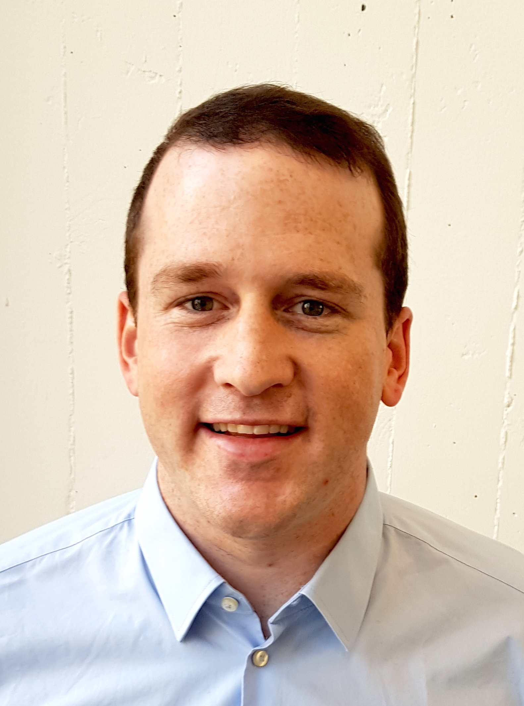

Alex Liniger
Post Doc
Computer Vision Lab Department of Electrical Engineering ETH Zurich Sternwartstrasse 7 8092 Zurich Switzerland.
Office: ETF C113.2
Phone: +41 44 632 72 23 Email: alex.liniger@vision.ee.ethz.ch

Brief Biography
Alex Liniger received the B.Sc. and M.Sc. degrees in mechanical engineering from the Department of Mechanical and Process Engineering, ETH Zurich, Switzerland, in 2010 and 2013, respectively, and in May 2018 succesfully defended his PhD degree at the Automatic Control Laboratory, ETH Zurich, Switzerland. Currently he is a Postdoctoral Researcher in the Computer Vision Lab, ETH Zurich, Switzerland, where he is part of Luc van Gool's group working in the Toyta TRACE project. During his PhD his main research interests include model predictive control, viability theory as well as game theory and their application to autonomous driving and racing. Currently, he is investigating how control theory and computer vision can be combined to achieve end-to-end learning approaches with formal guarantees.